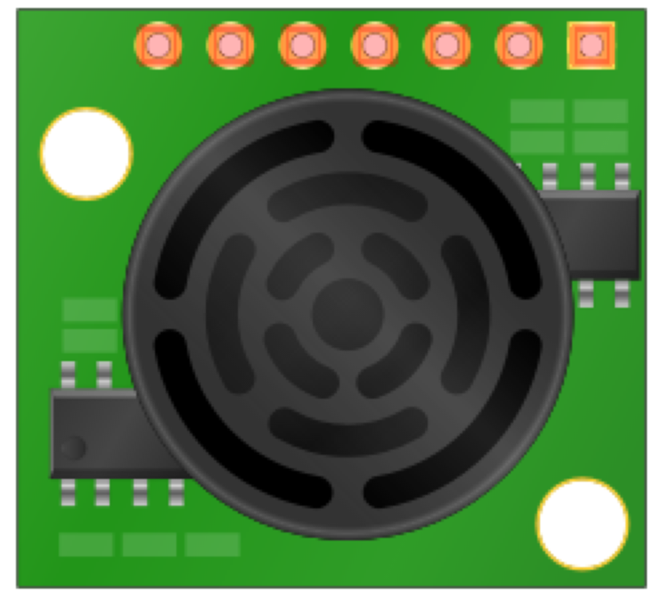

The following are the parts for this lab.
|  |
One (1) ultrasonic sensor. |
Wiring
Program
/*
Sense Pressure
*/
void setup()
{
// initialize serial communications
Serial.begin(9600);
}
void loop()
{
int sensor, inches, x;
// read the analog output of the EZ1 from analog input 0
sensor = analogRead(0);
// convert the sensor reading to inches
inches = sensor / 2;
// print out the decimal result
Serial.print(inches,DEC);
// print out a graphic representation of the result
Serial.print(" ");
for (x=0;x<(inches/5);x++)
{
Serial.print(".");
}
Serial.println("|");
// pause before taking the next reading
delay(1000);
}
Not Working?
Program not uploaded
Make sure the proper serial port is selected. Select the serial port in the Arduino IDE menu tools > serial port.
Sensor output incorrect
Check to make sure you have the analog output pin connected to A0 of the Arduino. When not connected, the sketch will provide incorrect data.
Going Further
Connect Two UltraSonic Sensors
Use two ultrsonic sensors to determine if an object is approaching from the front and the back. No one will be able to sneek up on you!
Add Sound
Add piezo buzzer to your circuit. When distance is less than a threshold, sound the buzzer.